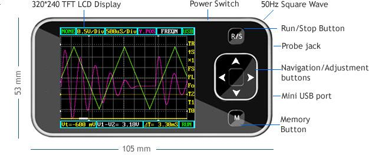
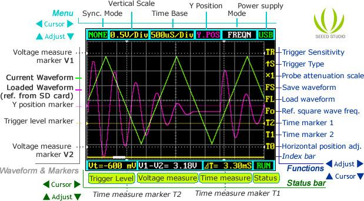

DSO nano is a pocket size digital storage oscilloscope fulfills basic electronic engineering requirements. It is base on ARM Cortex™-M3 compatible 32 bit platform, equipped with 320*240 color display, SD card capability, USB connection, and chargeable batteries. Weighs only 60g.
Model: TOL114C3M
http://www.seeedstudio.com/depot/images/dsointro.jpg
The warnings and wrong operations possible cause dangerous.
 
May include key specification and other specifications.
| Display | 2.8″ Color TFT LCD |
| Display Resolution | 320×240 |
| Display Color | 65K |
| Analog bandwidth | 0 - 200KHz |
| Max sample rate | 1Msps 12Bits |
| Sample memory depth | 4096 Point |
| Horizontal sensitivity | 1uS/Div～10S/Div (1-2-5 Step) |
| Horizontal position | adjustable with indicator |
| Vertical sensitivity | 10mV/Div～10V/Div (with ×1 probe) 0.5V/Div～100V/Div (with ×10 probe) |
| Vertical position | adjustable with indicator |
| Input impedance | >500KΩ |
| Max input voltage | 80Vpp (by ×1 probe) |
| Coupling | DC |
| Trig modes | Auto, Norma, Single, None and Scan |
| Functionalities: | Automatic measurement:
|
| Test signal | Built-in 10Hz～1MHz (1-2-5 Step) |
| Waveform storage | SD card |
| PC connection via USB | as SD card reader |
| Upgrade | by bootloader via USB |
| Power supply | 3.7V Chargeable Lithium battery / USB |
| Dimension (w/o probe) | 105mm X 53mm X 8mm |
The UI could be divided to 4 parts: main menu (top), functions (right column), status bar (bottom), and waveform & markers displays. Use cursor up , down, left , right to navigate among the three operational parts and make adjustments.
Page 4 of 9 10/26/2009
V1-V2 could be displayed.
and B could be displayed.
Horizontal main menu on top of screen, Navigate by left and right, adjust by up and down. Sync. Mode: When blinking, press up and down to select 4 different synchronization mode: AUTO, NORM, SING, and NONE.
triggered.
triggered waveform.
Vertical Scale: When blinking, press up and down to select different level of sensitivity. Total 19 scales are optional from 10mV/Div to 100V/Div.
20V/Div, please use probe with attenuation of 10:1).
match reference waveform, the latter will be cleared.
Horizontal sensitivity: When blinking, press up and down to select different sensitivities. from 1uS/Div to 10S/Div total 22 grades. Note 2: If newly set sensitivity does not match reference waveform, the latter will be cleared.
Y position: When blinking, press up and down to adjust the vertical position of the waveform. Press M to hide/activate Y position marker if needed.
Calculation Mode: Auto calculation modes include:
Power supply mode: Power supply by internal battery or USB port. Battery bar will be displayed when powered from internal.
Vertical function buttons on side of screen, Navigate by up and down ,adjust by left and right.
Trigger sensitivity: When blinking, press left and right to adjust trigger sensitivity, trigger level marker (Yellow dotted area) changes correspondingly.
Trigger Type: When blinking, press left and right to choose trigger mode of rising edge or falling edge.
Probe attenuation scale: When blinking, press left and right to choose 1:1 or 1:10 probe.
Save waveform: When blinking, status bar will display “ Save Filexxx”, press left and right to select file name with xxx = 000-255. Press M to save current waveform on display to SD card.
Load waveform: When blinking, status bar will display “ Save Filexxx”, press left and right to select file name with xxx = 000-255. Press M to load current waveform to display from SD card.
Note: current version has no file creation function, a FILEXXX.DAT must be prepared by connecting to PC by USB.
Ref. square wave freq: When blinking, press left and right to adjust the frequency of reference square wave.
Horizontal position adj: When blinking, press left and right to scroll waveform horizontally.
Index Bar: Show current display position of total loaded wavefrom.
Time markers: When blinking, press left and right to adjust T1 or T2 time measure marker, the time difference PT=T1-T2 will be displayed.
Voltage markers: When blinking, press left and right to adjust V1 or V2 time measure marker, the Voltage difference PV=V1-V2 will be displayed.
Trigger level: When blinking, press left and right to adjust trigger level, trigger level marker (Yellow dotted line) changes correspondingly.
Hold “R/S” Button and press “M” button to save current settings as default.
The DSO Nano v1 can use the same firmware as v2. See the common DSO Nano page for more information.
The projects and application examples.
Question1： What is the maximum input voltage when using a 10x probe on the Nano DSO?
Answer: The maximum input voltage could be 80Vpp. So when using a 10x probe on the Nano DSO, it could be 800 Vpp. However, we did not test that, and we are not responsible for any damage and injury because of measuring high voltage.
If you have questions or other better design ideas, you can go to our forum or wish to discuss.
| Revision | Descriptions | Release |
|---|---|---|
| v1.0b | Initial public release | Oct 26, 2009 |
Bug Tracker is the place you can publish any bugs you think you might have found during use. Please write down what you have to say, your answers will help us improve our products.
The Additional Idea is the place to write your project ideas about this product, or other usages you've found. Or you can write them on Projects page.
Click here to buy: http://www.seeedstudio.com/depot/dso-nano-pocket-size-digital-storage-oscilloscope-p-512.html?cPath=174.
This documentation is licensed under the Creative Commons Attribution-ShareAlike License 3.0 Source code and libraries are licensed under GPL/LGPL, see source code files for details.
Links to external webpages which provide more application ideas, documents/datasheet or software libraries.
Copyright (c) 2008-2016 Seeed Development Limited (www.seeedstudio.com / www.seeed.cc){kind=link}